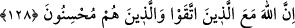

çepeçevre kuşatan bir şey gibi olur.
Âyette ilk nehiy (iman etmemelerinden dolayı mahzun olmamak) onlar tarafından
matlub olması sebebiyle günaha düşmekten sakınmakla ilgilidir ki bu geçmiştir. İkincisi,
onlar tarafından ulaşacak bir mahzurdan sakınmak (kurmakta oldukları tuzaktan kaygı
duymamak) ile ilgilidir ki, bu da gelecektir.
128. Çünkü Allah, (kötülükten) sakınanlar ve güzel amel edenlerle beraberdir.
“Çünkü Allah,” kötülük ve günahlardan “sakınanlar ve güzel amel edenlerle
beraberdir.” Allah’ın beraber olması velâyeti ve lütfu anlamınadır.
Denilir ki: “Muttakîlerlerle/sakınanlarla beraber olması” kötülük yapanlara karşı
onları desteklemesi anlamınadır. “Güzel amel edenler”, kendilerine düşmanlık
yapanlara karşı bile iyilikle karşılık verenlerdir. Dolayısıyla birinci durumda “el-ihsan”
bir şeyi iyi güzel yapmak anlamınadır. İkinci durumda, kötülük yapmanın zıddı olan
iyilik yapmak demektir.
Bir hadiste şöyle buyrulmuştur: “Muhsin (iyilik yapan) kimsenin üç vasfı vardır:
Allah’a itaata koşar, haramlardan sakınır, kendisine kötülük yapana iyilik yapar.”
İhsan ve keremden insanın hatırı şâd olur
Takvâ ile din hânesi âbâd olur
Bu sıfatlar konusunda acele edersen
Yaratılan ve Yaratan’ın her ikisinin de rızasını bulursun
Mümşad Dîneverî der ki: “Meleklerden bir melek gördüm. Bana: “Bir kişi dışında
Allah’la beraber olanların hepsi helak olmuştur.” diyordu. Ona: “O kimdir?” dedim.
“Allah’ın kendisiyle beraber olduğu kimsedir.” dedi. Nitekim şu âyet buna işaret eder:
“Allah, (kötülükten) sakınanlar ve güzel amel edenlerle beraberdir.” Çünkü asıl gaye,
sevilenin (Allah’ın) sevenle beraber olmasıdır. Çünkü O’nun rızası ve kula yönelmesi
ile bu beraberliğin farkına varılır. Sevenin sevilenle beraber olmasına gelince, bu bazen
mahbubun (Allah’ın) o kişiye gazabı ve ondan yüz çevirmesi durumunda da olabilir.
Herim b. Hayyan’dan nakledilmiştir: Vefatı yaklaşınca ona: “Vasiyette bulun.”
denildi. O da: “Vasiyet maldan olur, benim ise malım yok. Size Nahl sûresinin son
âyetlerini vasiyet ederim.” diye cevap verdi.
Fakir (Bursevî) (Kadîr olan Allah ona müsâmaha ile muâmele etsin) der ki: Şeyhim
ve senedim (Allah ruhunu rahat ettirsin) vefatından bir gün önce arkadaşlarını topladı
ve şöyle dedi: “Bilin ki, ey arkadaşlarım! Benim malım yok ki vasiyet edeyim. Fakat